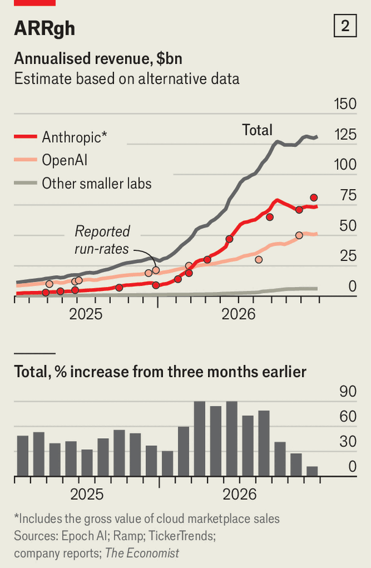
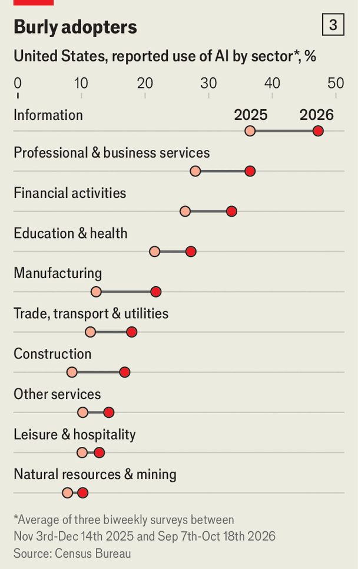

这些现金处在漏斗顶端，向下倾泻进整个生态——养活其他 AI 企业，并说服投资者给它们更多钱。Anthropic、OpenAI 等出售的模型必须跑在芯片上，芯片多由英伟达设计、台积电制造。芯片又依赖一堆元器件。其中一种内存（DRAM）短缺，令韩国主要存储厂商三星与 SK 海力士股价在春天飙升。芯片还要装进数据中心，配上更复杂的电子设备。这一切都要用电——燃气轮机制造商因此发了一笔财，AI 繁荣背后的电力很大一部分来自它们。换句话说，AI 世界的一切，都依赖漏斗顶端那笔收入继续流入，最好还是以不断加速的速度。

chart: the economist
从2000亿到3万亿，意味着一个数量级的跨越（硅谷黑话叫“oom”）。这可能吗？由于 AI 许多最大玩家一直是非上市公司，追踪其收入的确切路径很困难。但上一个 oom 并没花太久。Anthropic、OpenAI 与若干较小开发商（不含谷歌、Meta 等）的合计收入，大概在2025年3月越过100亿美元。今天是1300亿。
下一次跨越会更难。AI 近期晃动的一个原因，是担心收入增长可能放缓。Ramp（追踪企业信用卡上的 AI 支出）与 TickerTrends（汇总社交媒体帖子与企业及消费者样本支出模式）这类替代数据代理，都指向 AI 开发商收入增长放缓。用这些数据集拟合 Anthropic、OpenAI 等公布的收入数字，模型显示三个月收入增速从春天的80%—90%降到10月的12%（见图2）。
万亿美元级的 AI 经济会改变世界，而今天千亿级的还没有。目前，这项技术的经济影响在 AI 行业之外仍然有限。“七大科技巨头”的利润率与人均收入大幅上升，但标普500其余493家几乎持平。软件股已基本从年初“软件末日”的重创中恢复——当时投资者担心自动编程会让几乎任何软件产品都能被廉价复制。

chart: the economist
宏观数据也没怎么动。美国生产率增长强劲，但近来并不比2020年代初强多少。与此同时，其他富裕国家仍慢得令人难受，即便在英国这样企业采用 AI 速度与美国相近的国家。全球债券市场似乎也没有为增长的大幅提升定价。
到目前为止，唯一被 AI 真正颠覆的职业是软件工程。许多程序员如今几乎不碰代码，而是监督成群的 AI 智能体。据美国人口普查局数据，包括软件出版在内的“信息”部门，AI 渗透率在全经济中最高、增长最快（见图3）。AI 数据公司 Mercor 声称，它在 AI 智能体上的花费超过员工工资。
这很极端，但并非完全不具代表性。科技公司的 AI 支出与其他人完全不同。据 Ramp 数据，风投支持的初创公司平均每人每月在 AI 上花约100美元（见图4），普通企业只花10美元左右。许多公司在经历一波“token 最大化”的 AI 热情后，正变得更谨慎。10月，高盛禁止非工程师使用 AI 编程工具，理由是生产率提升令人失望、且担心网络安全风险。（不过对手摩根大通随后宣布要加倍投入这项技术。）
收益最明显的地方，是 AI 模型的底层能力。在 Anthropic 派驻研究人员的非营利机构 METR 的一份报告发现，Anthropic 模型能力的提升速度很可能在过去一年翻倍。近几个月，关于 AI 解决未解数学难题、或新型 AI 网络攻击的公告接连不断。
但对 AI 模型训练投入的激增，也意味着模型智能的每一次跃升都比上一次更贵。这进一步提高了把这种智能变现的商业压力。
到目前为止，出售 AI 访问权是一门极好的生意。改进来得足够快，最好的模型也足够有吸引力，让开发商能收取健康毛利。Anthropic 今年上半年毛利率为85%。乍看之下，AI 会让投资者想起上一代狂飙的软件成功故事。
更便宜的模型会成为威胁吗？模型智能达到某一水平后，往往会被商品化、价格骤降（见图5）。这既反映美国 AI 玩家之间的竞争，也反映中国快速跟随者的威胁。在汇总各类 AI 基准的 Epoch 能力指数上，目前最好的中国产品是 Kimi k3.1 Pro，得分与 OpenAI 的 gpt 5.5 Pro 大致相当——后者在六个多月前的4月还是美国最强的公开模型。过去几年，中国模型一直落后大约这么远。
如果训练得巧妙，便宜模型可能格外令人担心。对冲基金桥水的研究人员借助 AI 初创公司 Thinking Machines 的工具发现，一个经过微调的小型中国模型在处理金融文件上击败了当时 Anthropic 与 OpenAI 的领先模型。这类微调需要在数据与算力上投入，只有大公司才觉得值得，但如果这个发现在更广范围成立，那会是降低 AI 账单的诱人办法。
不过，有些 AI 用途永远需要绝对最好的模型，尤其是对抗性的，比如交易或网络安全——在那里，成功意味着领先对手。其他情况下也可能值得付溢价。大规模无人监督的 AI 智能体集群——比如今年早些时候 OpenAI 意外放出去攻击 AI 初创公司 Hugging Face 的那种——仍然需要顶尖智能。
AI 开发商可能找到办法让业务更具黏性。近几个月，Anthropic 与 OpenAI 推出了一批面向法律、科学与金融的专业工具。Anthropic 还与私募股权公司黑石、高盛等成立合资企业，开始向企业销售定制 AI 服务。每一次尝试都是寻找能把自己嵌进去、挖出更深护城河的收入来源。
但 AI 产品的黏性有上限。通过让电脑更易用、更能响应人类语言指令，AI 本身简化了从一家供应商换到另一家的过程。Anthropic 今年早些时候巧妙地利用了这一点：它和五角大楼的争执引发了一波同情性的“搬家”潮，用户从 ChatGPT 转向 Claude。设置 Claude 时，用户会得到一个可粘贴进 ChatGPT 的提示词，要求对手模型总结它了解的用户信息。Claude 随后消化这些输出，从一开始就能给出个性化回应。
模型公司的另一个选项是自营交易。这可以是字面意义上的。几乎所有能想到的传言都曾挂到“安全超级智能”身上——这家神秘 AI 研究公司由 OpenAI 前首席科学家伊利亚·苏茨克维（Ilya Sutskever）经营。一个流行（虽然荒唐）的说法是，它在用模型做高频交易。对 Anthropic 及其同行更可能的版本，是隐喻意义上的自营：直接使用 AI 变现，可能在合资企业里，进入药物研发或机器人等突破可能极赚钱的领域。对足够聪明的模型，把访问权限制在少数超高付费客户——这也能掐断蒸馏威胁——可能比广泛发布更精明。
政治可能挡路。美国中期选举是第一次把 AI 摆上选票的重大选举，而它表现不佳。在结果出炉前，本刊发现，住在数据中心选址附近的美国人，一年来向民主党倾斜了约五个百分点，相比之下别处人口特征相同的选民没有这种变化。在41场关于数据中心的本地公投中，除一场外选民都选择限制。反数据中心候选人取得惊人胜利。影响最大的是民主党人吉娜·伊诺霍萨（Gina Hinojosa）意外当选得州州长，她主张暂停数据中心建设。得州约占美国数据中心建设的三分之一。